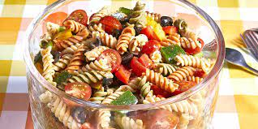

Pasta Salad

Description
This pasta salad is a great addition to any party or any dinner when you have to quickly make something. You can add or take away anything that you may not like to please your tastes. Whenever a party comes along this will be a recipe that you jump to make for them.
Ingredients
- 4 cups of Spiral Pasta
- Salad dressing or sauce of your choosing
- Cherry tomatoes
- Green,red and yellow capsicum
- Salt and pepper
Steps
- Fill large saucepan with water. Turn stove on and get the water to boil.
- Once the water is boiling place the pasta in the saucepan. Cook until the pasta is soft but firm.
- While the pasta is cooking start cutting the tomatoes and the capsicum.
- Slice the cherry tomatoes in half and slice the capsicum into small pieces.
- Once the pasta is cooked, drain the water from the sauce pan and give the pasta a wash under cold water to clean off the pasta.
- Place the pasta into a bowl. Adding in the sliced tomato and capsicum.
- Add the salad dressing of your choice or sauce into the bowl of pasta, tomato, and capsicum.
- Mix the salad well to ensure that the salad doesn't have ingredients in just one spot.